Gig-economy workers, including delivery riders, cab drivers, and field service workers, often spend long hours on the road and may work alone. Extended travel, time pressure, and fatigue can increase their risk of road accidents. If a rider is involved in an accident and is unable to report the incident, emergency response may be delayed. Existing safety procedures often depend on the rider or a bystander manually reporting an incident. An automated IoT-based safety system can help address this gap by monitoring relevant sensor data, identifying conditions associated with a potential accident, determining the rider's location, and sharing the incident information with responsible personnel. In addition, gig platforms may require a centralized monitoring system through which rider safety information and incident updates can be observed remotely. This project addresses these requirements by developing an IoT-based AI Gig Rider Safety Platform using an ESP32, HMC5883L Triple-axis Magnetometer, and NEO-6M GPS module. When the configured safety or accident-detection condition is detected, the ESP32 obtains the rider's GPS coordinates, generates a location link, and sends the incident information and location to the AI_GIG_SAFETY_RIDER Telegram bot. The system also sends monitoring data to an Adafruit IO dashboard, enabling remote monitoring of the rider's safety status and incident information.
Delivery riders, cab drivers, and other gig-economy workers may spend long hours on the road, often without immediate support. If a rider is involved in an accident and cannot manually report the incident, the delay in communicating the rider's condition and location can affect the response process. This project presents an IoT-based AI Gig Rider Safety Platform designed to monitor rider safety conditions, obtain location information, and provide remote alerts and monitoring. The system uses an ESP32 DevKit V1 as the main controller, an HMC5883L Triple-axis Magnetometer Board for obtaining magnetic-field and directional information, and a NEO-6M GPS module for acquiring the rider's geographical coordinates. A 12 V, 2 A adapter and LM2596 DC-DC buck converter are used to provide the required power supply, while a buzzer provides a local audible indication during an alert condition. The ESP32 processes the sensor information according to the configured safety-detection criteria. When a potential accident or abnormal condition is detected, the system obtains the rider's latitude and longitude from the GPS module and generates a Google Maps location link. The incident information and location link are then transmitted through the Internet to the AI_GIG_SAFETY_RIDER Telegram bot, allowing the configured Telegram recipient to receive the alert remotely. At the same time, relevant system information is transmitted to Adafruit IO, where it is displayed on a centralized dashboard for remote monitoring. The system was assembled on a custom PCB and tested under controlled conditions to verify sensor operation, GPS location acquisition, Telegram message delivery, and Adafruit IO dashboard updates. The developed platform provides an integrated approach for rider safety monitoring, automatic incident notification, and location sharing.
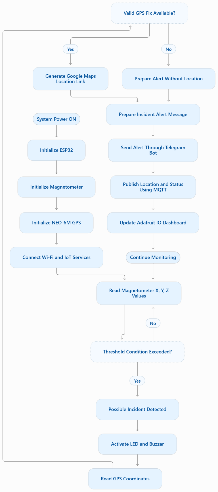
SHAKE_THRESHOLD = 800). If the condition is not satisfied, the system continues monitoring. If the condition is satisfied, a possible incident is detected.
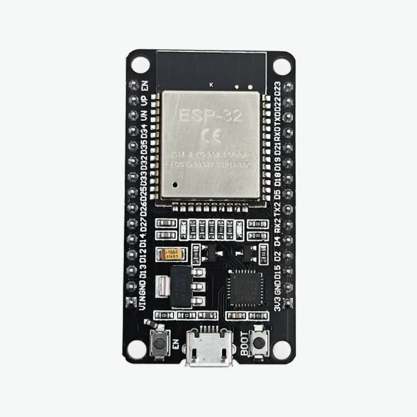
The ESP32 DevKit V1 acts as the main controller of the AI Gig Rider Safety Platform. It continuously collects motion and directional data from the HMC5883L Triple-Axis Magnetometer through the I2C interface and processes the sensor readings to identify conditions that meet the defined safety or crash-detection criteria. When a potential accident or abnormal event is detected, the ESP32 obtains the rider's current location from the NEO-6M GPS module through a UART interface. The GPS data is processed to extract the latitude and longitude coordinates and generate a Google Maps location link corresponding to the rider's position. After obtaining the location information, the ESP32 communicates with the SIM900A GSM module through another UART connection to transmit the emergency information. The system can send an SMS containing the rider's location link to the configured emergency contact. At the same time, the location and relevant safety information can be transmitted to a Telegram bot, allowing the alert information to be received remotely. The system also sends the required monitoring data to Adafruit IO, where the information can be displayed on a dashboard for real-time monitoring and observation of the rider's safety status.
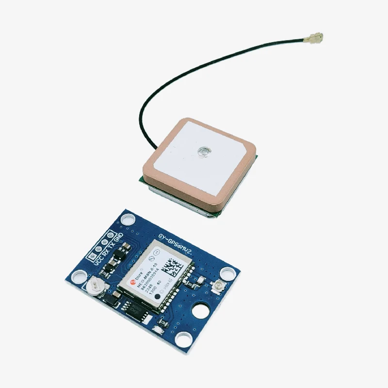
The NEO-6M receives signals from GPS satellites and provides the rider’s location. It sends standard NMEA data to the ESP32 over a serial connection, where the latitude and longitude are extracted. When a crash is confirmed, the coordinates are formatted as a Google Maps link to help responders locate the rider.
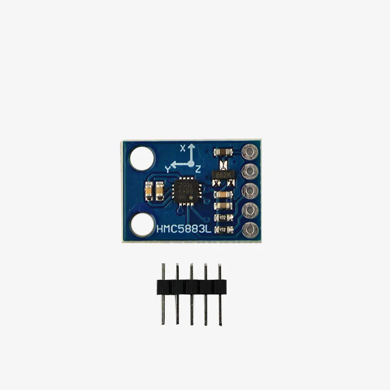
, the HMC5883L Triple-Axis Magnetometer is used to detect the orientation and direction of the rider's vehicle. The sensor measures the magnetic field along the X, Y, and Z axes and communicates with the ESP32 through the I²C communication protocol. By processing the X and Y magnetic-field values, the ESP32 can determine the approximate heading or direction in which the vehicle is moving, such as North, South, East, or West. This directional information can be combined with the NEO-6M GPS module, which provides the rider's location and speed, and the MPU6050, which provides motion and acceleration information. In the proposed safety platform, the magnetometer can therefore help monitor changes in vehicle orientation and provide additional movement information to the ESP32. The collected sensor data can be processed by the system to improve rider-safety monitoring and support the detection and analysis of abnormal riding conditions. The magnetometer should be positioned away from motors, relays, speakers, and high-current wires because magnetic interference can affect its readings
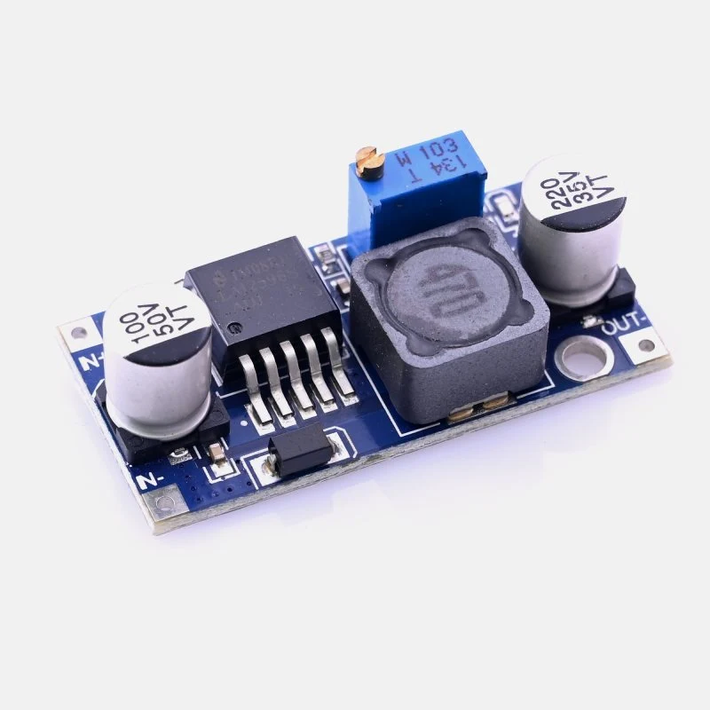
The LM2596 is a switching buck converter that reduces the 12 V input to a lower voltage for the system’s electronics. It helps supply the SIM900A, which can draw brief bursts of current during cellular transmissions. A suitable power supply and converter help reduce voltage drops that could otherwise cause the system to reset while sending an alert.
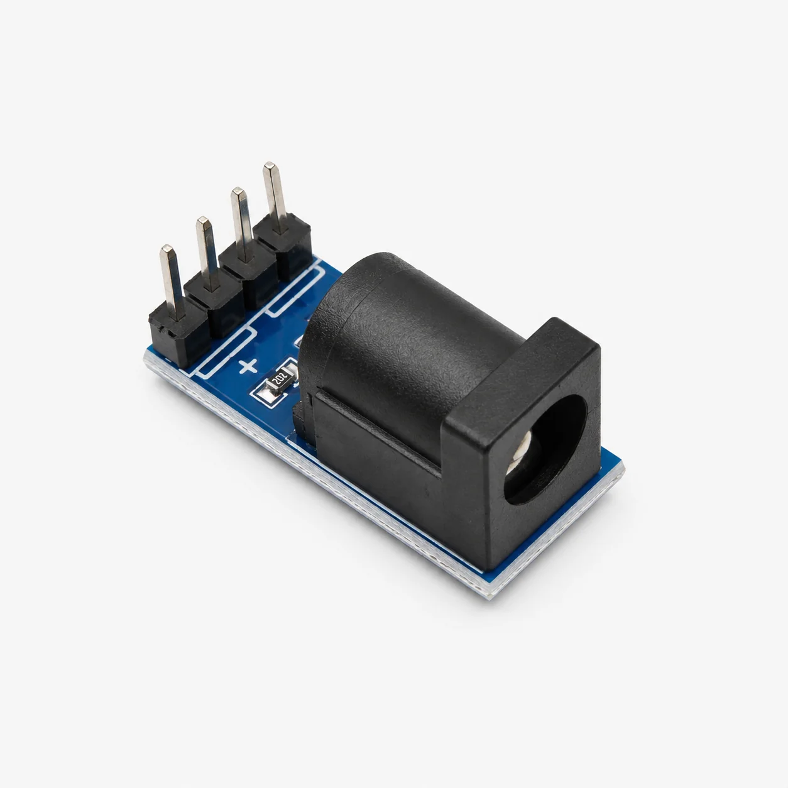
The DC Power Supply Module provides a stable power source for the system. It ensures consistent voltage levels for the various components, including the ESP32 and SIM900A, which are sensitive to power fluctuations.
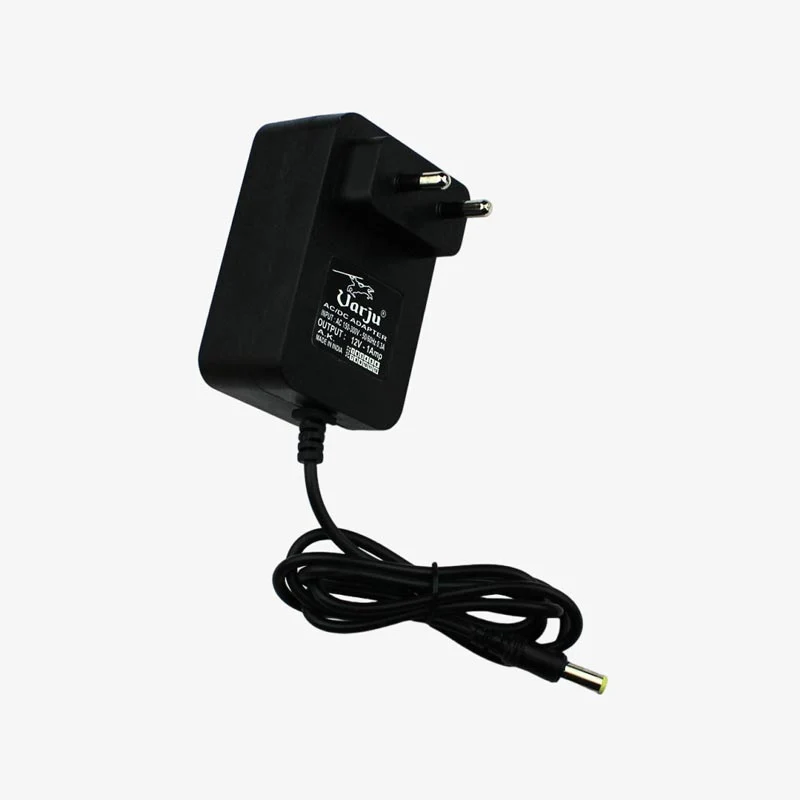
The DC Power Supply Module provides a stable power source for the system. It ensures consistent voltage levels for the various components, including the ESP32 and SIM900A, which are sensitive to power fluctuations.
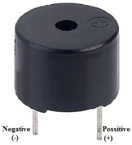
The Buzzer is used to provide audible alerts and notifications within the AI Gig Rider Safety Platform. It is connected to the ESP32 DevKit V1 and can be controlled via GPIO pins to produce different sounds for various events, such as emergency alerts or system status updates.
As part of the initial development of the AI Gig Rider Safety Platform, each hardware component was individually tested and verified for proper operation with the ESP32 DevKit V1. The ESP32 was configured as the main processing and control unit for interfacing with the different modules. The NEO-6M GPS module was tested for accurate location data acquisition, while the HMC5883L triple-axis magnetometer was evaluated for directional and heading information. The LM2596 DC-DC buck converter was tested to provide a stable and regulated power supply for the connected components. The DC power jack was also checked for reliable power input and connectivity. These tests helped confirm the compatibility, functionality, and reliable communication of each component before integrating them into the complete project system.
To improve the reliability, compactness, and organization of the hardware, a dedicated Printed Circuit Board (PCB) was designed for the AI Gig Rider Safety Platform. The PCB approach was selected to reduce the clumsiness of individual wire connections and provide a structured interconnection between the ESP32, power supply, sensors, and other peripherals. EasyEDA was used for schematic design, PCB layout development, routing, and 3D visualization of the board. The final PCB was designed with an overall dimension of 99 mm × 94.14 mm, providing sufficient space for component placement and routing.
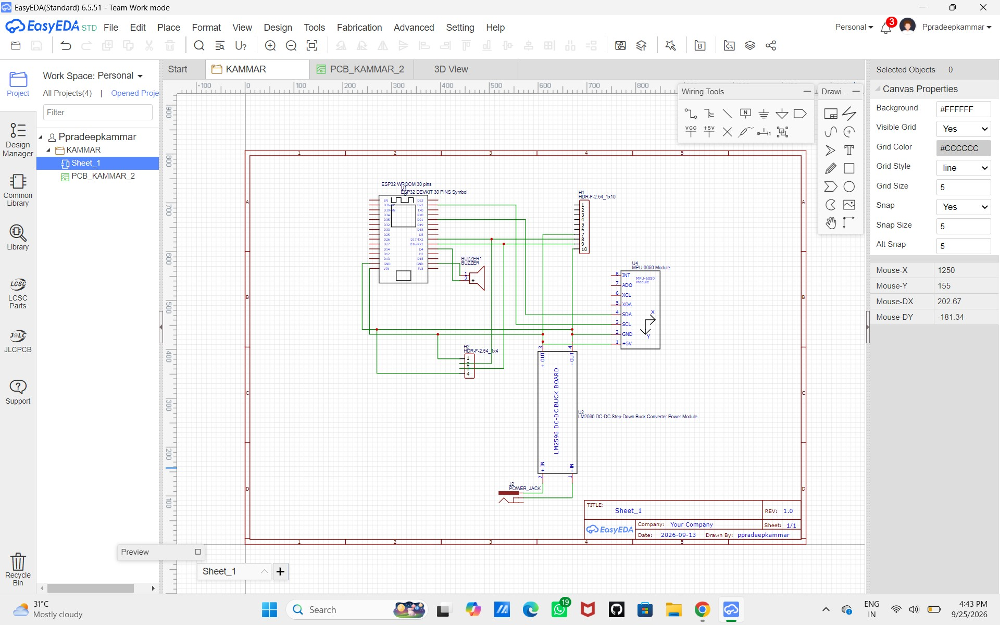
The first stage involved developing the complete circuit schematic in EasyEDA. The ESP32 DevKit V1 was selected as the main controller, with the required sensor and power interfaces connected to the appropriate GPIO and power pins. The schematic also includes the DC power input, LM2596 DC-DC buck converter, sensor interface, buzzer, and connector headers. Power and signal connections were carefully arranged to ensure proper communication between the modules and to simplify the transition from the schematic to the PCB layout.
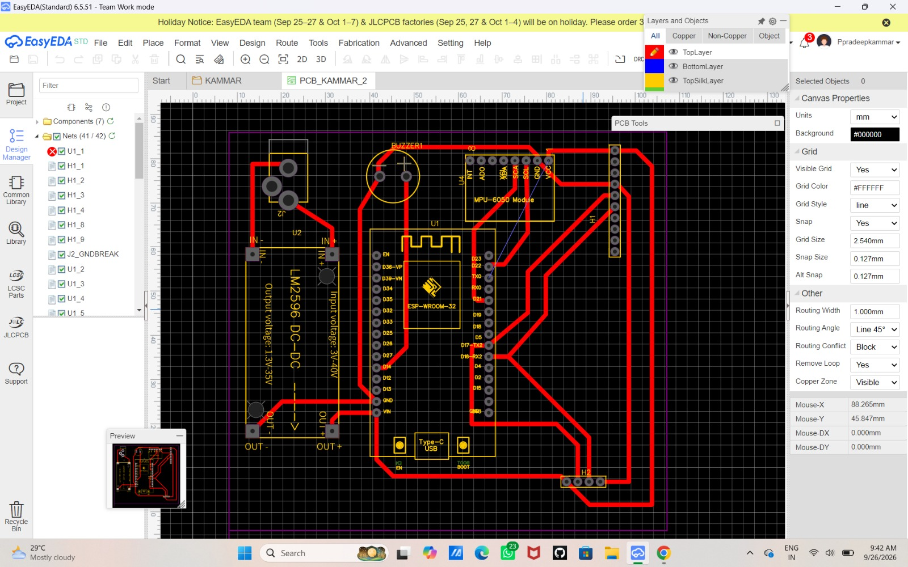
After completing the schematic, the circuit was converted into a PCB layout in EasyEDA. The components were positioned according to their functional requirements while considering accessibility, wiring space, and overall board organization. Copper tracks were routed between the ESP32, sensor connections, power section, buzzer, and other interfaces. The layout was designed to minimize unnecessary crossings and reduce the excessive wiring associated with a conventional breadboard-based setup. The final PCB outline was maintained at 99 mm × 94.14 mm.
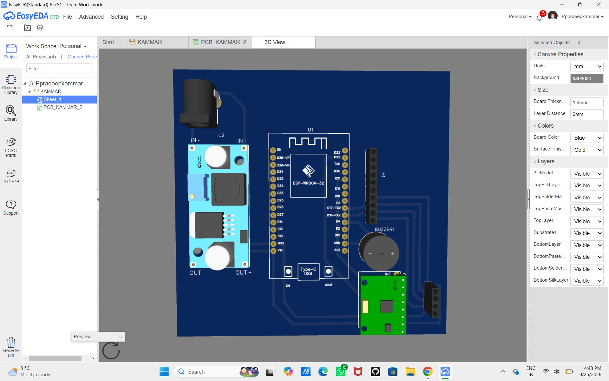
A 3D model of the designed PCB was generated using EasyEDA to verify the physical arrangement of the components before fabrication. The 3D view provides a representation of the ESP32, LM2596 buck converter, connectors, sensor interface, buzzer, and DC power input mounted on the board. This visualization helped in checking component placement, board dimensions, clearances, and the overall feasibility of the hardware design.
The following specifications were used during the PCB design and routing process in EasyEDA for the AI Gig Rider Safety Platform.
| PCB Parameter | Dimension |
|---|---|
| PCB Length | 99 mm |
| PCB Width | 94.14 mm |
| Track / Routing Width | 1.00 mm |
| Grid Size | 2.54 mm |
| Snap Size | 0.127 mm |
| Routing Angle | 45° |
| PCB Thickness | 1.6 mm |
After completing the PCB schematic and layout design in EasyEDA, the finalized PCB design was prepared for manufacturing using CopperCAM. The Gerber and drill files were imported into CopperCAM to generate the required machining paths for the PCB fabrication process. The manufacturing process was divided into different operations, including copper-layer engraving, hatching, drilling, and edge cutting. The engraving operation was used to remove unwanted copper around the designed tracks and isolate the electrical paths. Hatching was applied to clear the required copper areas systematically and improve the separation between tracks. The drilling operation was used to create the required through-holes for component leads and connector mounting. Finally, the edge-cut operation was configured to define and separate the PCB from the remaining copper-clad board. The generated machining data was then used with the Roland DG SRM-20 PCB milling machine for physical fabrication. This process converted the digital PCB design into a fabricated board while maintaining the required track layout, holes, and board outline.
A pointed, conical engraving bit marked G8471 was used for the engraving and hatching operations. Its 0.20 mm tip supports fine cutting for accurately isolating narrow PCB tracks, while the 30° cutting angle allows controlled copper removal. The 3.00 mm shank fits the milling machine holder. Used with the Roland DG SRM-20, the bit removed unwanted copper to create electrical isolation between the designed PCB tracks.
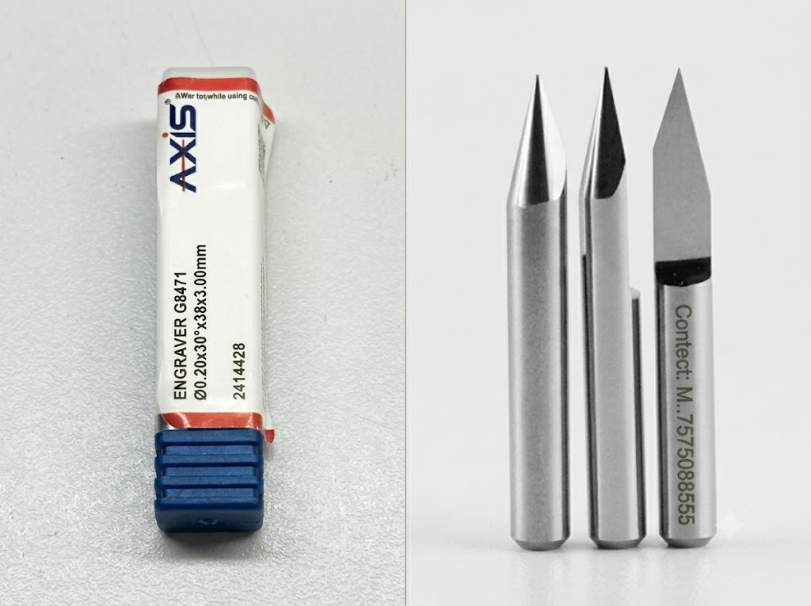
| Parameter | Specification |
|---|---|
| Tool Type | PCB Engraving Bit |
| Tool Marking | G8471 |
| Tip Size | 0.20 mm |
| Cutting Angle | 30° |
| Shank Diameter | 3.00 mm |
| Application | PCB Engraving and Hatching |
| Machine | Roland DG SRM-20 |
| Purpose | Copper removal and track isolation |
An AXIS E2661 two-flute (2F) end mill was mounted on the Roland DG SRM-20 for PCB edge-cutting and drilling operations. Guided by the machining paths generated in CopperCAM, the tool followed the programmed outer board boundary to separate the fabricated PCB from the remaining copper-clad material. The programmed paths were also used to make the required holes for component mounting and connections, maintaining their specified positions and dimensions.
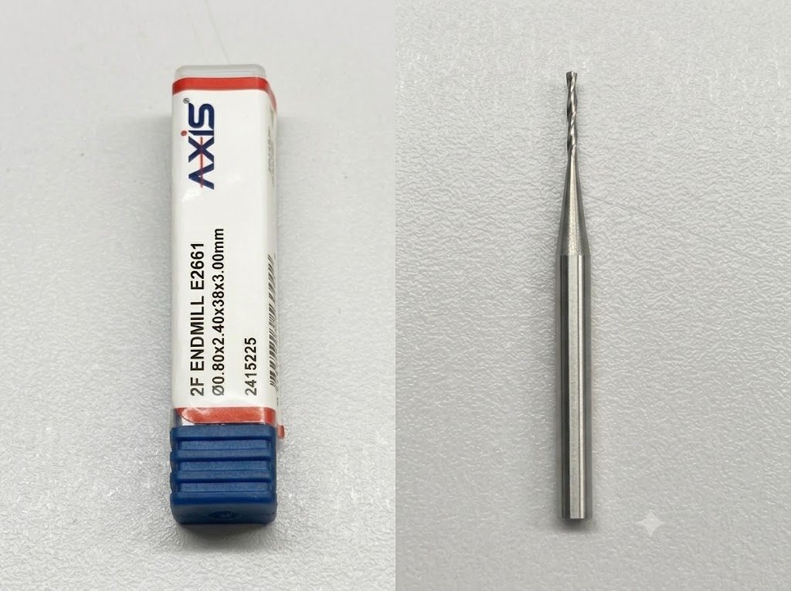
| Parameter | Specification |
|---|---|
| Manufacturer | AXIS |
| Tool Type | 2-Flute (2F) End Mill, Model E2661 |
| Cutting Diameter | 0.80 mm |
| Shank Diameter | 3.00 mm |
| Cutting Length (Flute Length) | 2.40 mm |
| Total Length | 38 mm |
| Machine | Roland DG SRM-20 |
| Application | PCB edge cutting and drilling |
| Parameter | Value |
|---|---|
| Engraving Speed | 5 mm/s |
| Cutting Speed | 2 mm/s |
| Hatching Speed | 5 mm/s |
| Boring/Drilling Speed | 2 mm/s |
| Coordinate Reference | South-West Corner |
| Z-Zero Reference | Circuit Surface |
| Manufacturing Platform | CopperCAM |
| PCB Milling Machine | Roland DG SRM-20 |
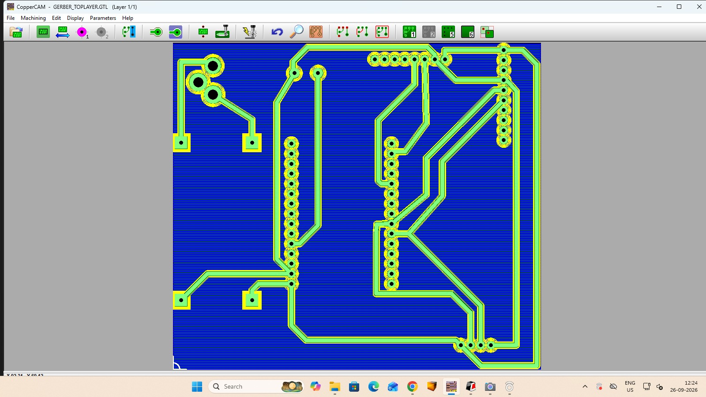
This image shows the combined engraving and hatching tool paths generated in CopperCAM. The highlighted paths indicate the areas to be machined for isolating the copper tracks and removing unwanted copper regions from the PCB surface.
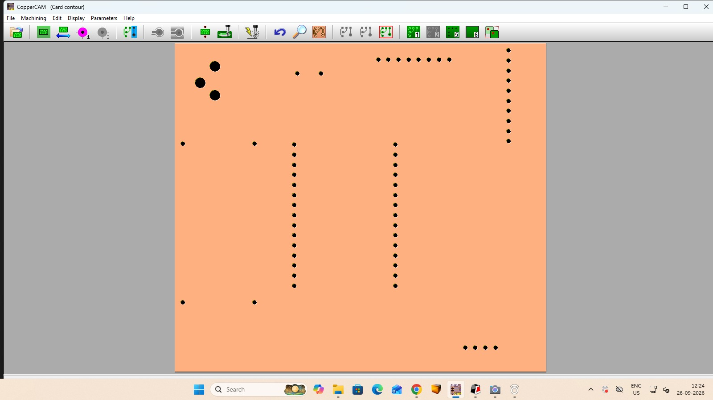
This image shows the imported top-layer Gerber file in CopperCAM, representing the copper tracks and connection paths of the designed PCB. The displayed tool paths define the areas where copper material needs to be removed during the engraving process.
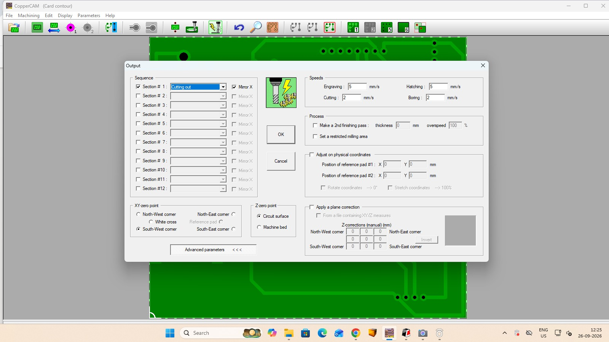
This image shows the CopperCAM machining output configuration used for PCB fabrication. The engraving, cutting, hatching, and boring speeds are configured according to the selected machining operations. The coordinate reference and circuit-surface Z-zero are also defined before generating the machining data.
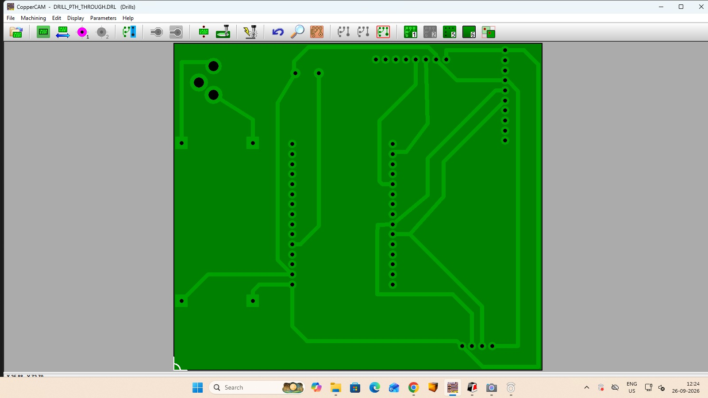
This image represents the drilling layout generated from the PCB drill file in CopperCAM. The black circular points indicate the locations of the required holes for component leads, connectors, and other through-hole connections on the PCB.
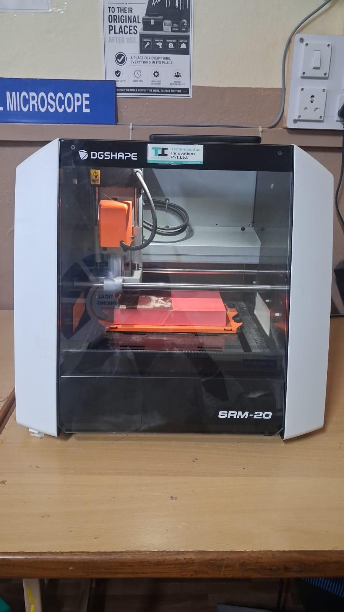
The image illustrates the PCB manufacturing setup in which the generated CopperCAM machining data is used to control the milling process. The SRM-20 performs the programmed operations to fabricate the PCB according to the designed circuit layout and board outline.
This video demonstrates the PCB manufacturing process carried out for the AI Gig Rider Safety Platform using the Roland DG SRM-20 milling machine. The manufacturing process begins with copper engraving, where unwanted copper is removed to isolate the designed circuit tracks. The hatching operation then clears the required copper areas according to the generated CopperCAM tool paths. Next, drilling is performed to create the required holes for component mounting and electrical connections. Finally, the edge-cutting operation defines the outer boundary of the PCB and separates the fabricated board from the remaining copper-clad material. The video shows the complete sequence from machining setup to PCB fabrication.
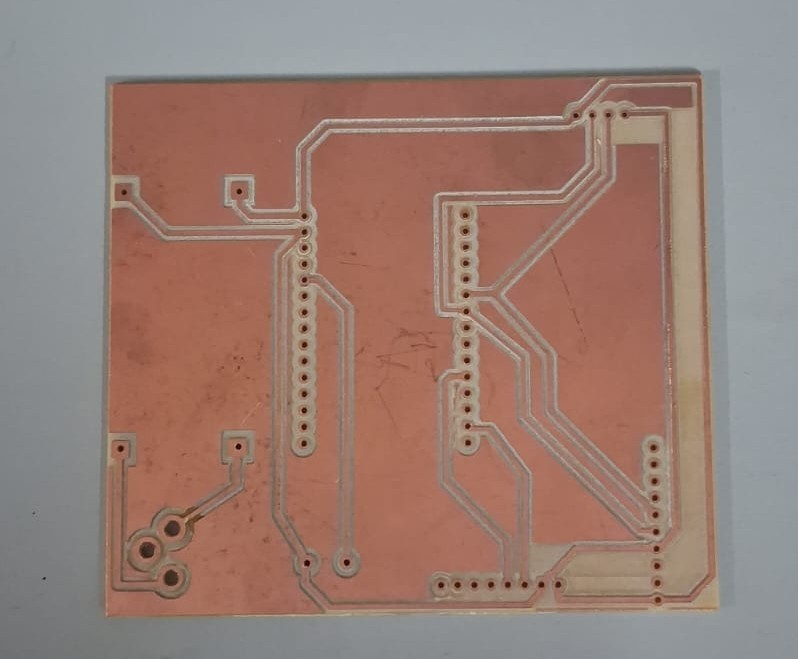
This image shows the final fabricated PCB developed for the AI Gig Rider Safety Platform. The completed board includes the required copper tracks, component mounting holes, and routed connections as designed in EasyEDA. The fabricated PCB provides a compact and organized platform for mounting and integrating the project components for further system testing.
Visuals of the PCB Component Assembly Process for the AI Gig Rider Safety Platform with my teamates. The components were carefully soldered onto the fabricated PCB, ensuring proper alignment and secure connections. The assembly process involved placing the ESP32, GPS module, HMC5883L magnetometer, LM2596 buck converter, buzzer, and other necessary components onto the board according to the designed layout. After assembly, the PCB was inspected for soldering quality and electrical continuity before proceeding to system testing and integration.
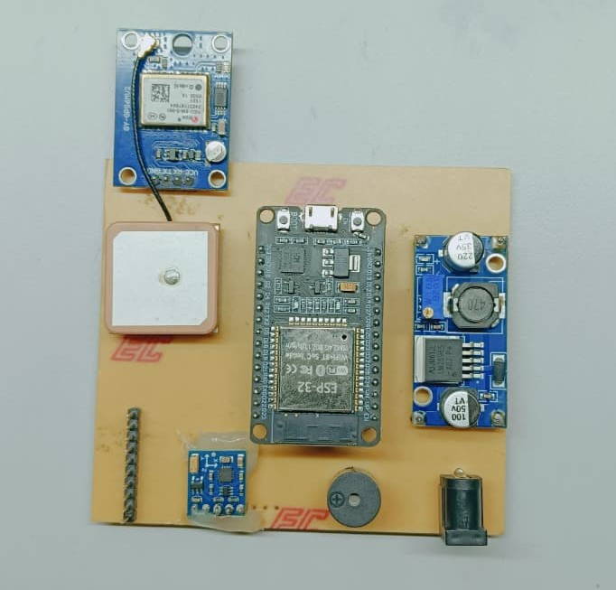
Final Assembled PCB of the AI Gig Rider Safety Platform with ESP32, GPS Module, HMC5883L Magnetometer, and Power Supply Circuit.
/newbot,
choose a bot name, and register the username
AI_GIG_SAFETY_RIDER. BotFather generates a token
for the ESP32 connection; keep it private.
AI_GIG_SAFETY_RIDER in Telegram and select
Start to initialize the chat that will receive system messages.
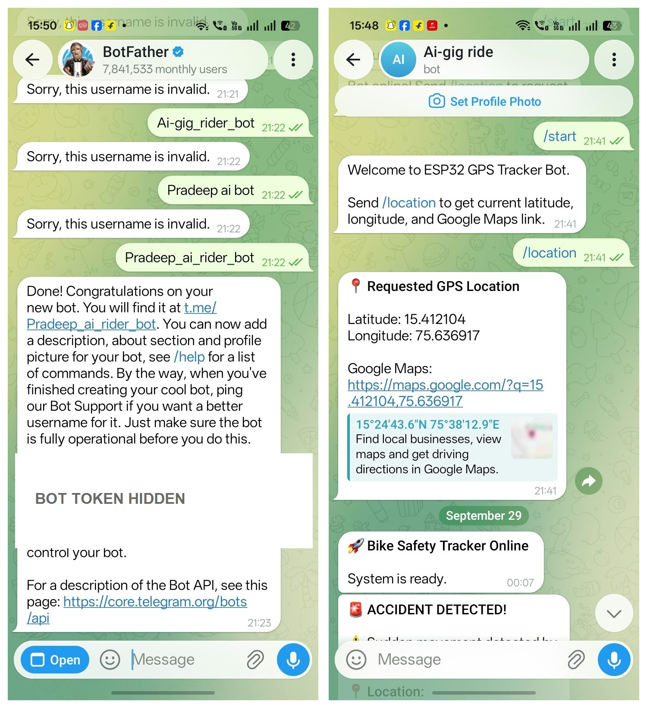
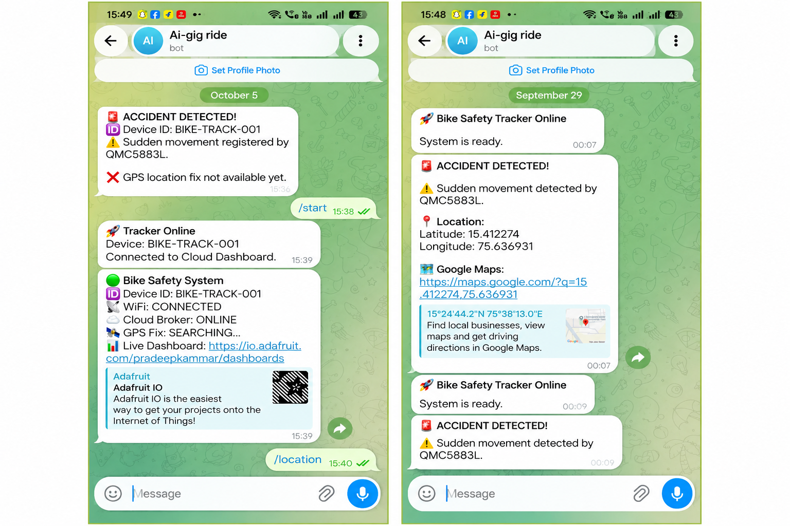
An IoT-based monitoring dashboard was developed using Adafruit IO to monitor rider information, location-related data, and system status. The Bike Safety Monitor dashboard provides a centralized interface for viewing data published by the ESP32.
The Bike Safety Monitor dashboard provides a centralized cloud-based interface for monitoring rider-related information and system status. Its integration with the ESP32 and Telegram bot supports remote monitoring and incident notification for the AI Gig Rider Safety Platform.
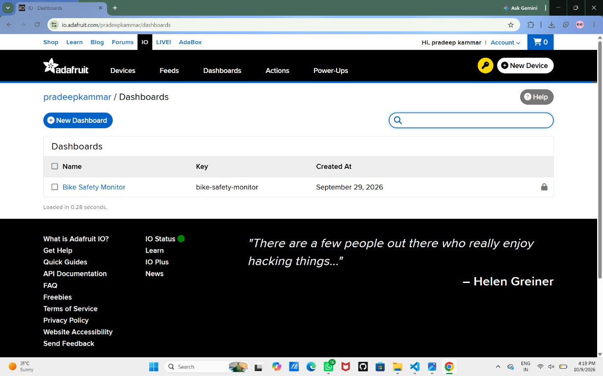
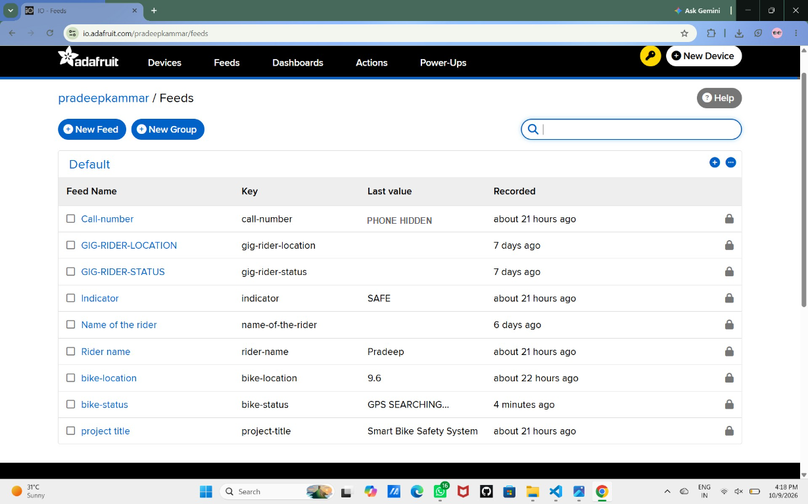
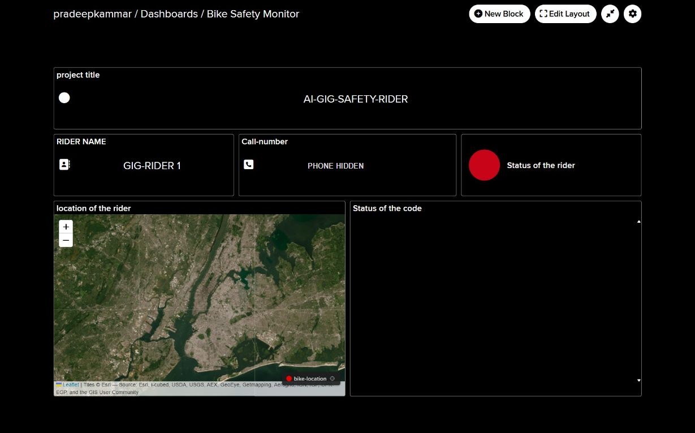
Replace the Wi-Fi credentials, Adafruit IO credentials, Telegram bot token, and chat ID before uploading this code to the ESP32.
#include <Wire.h>
#include <QMC5883LCompass.h>
#include <WiFi.h>
#include <WiFiClientSecure.h>
#include <UniversalTelegramBot.h>
#include <ArduinoJson.h>
#include <TinyGPSPlus.h>
#include "Adafruit_MQTT.h"
#include "Adafruit_MQTT_Client.h"
// =====================================================
// DEVICE CONFIGURATION & IDENTIFIER
// =====================================================
#define DEVICE_ID "BIKE-TRACK-001"
// =====================================================
// QMC5883L ACCELERATION / SHAKE SENSOR
// =====================================================
QMC5883LCompass compass;
#define LED_PIN 2
#define BUZZER 14
#define SHAKE_THRESHOLD 800
int previousX, previousY, previousZ;
int currentX = 0, currentY = 0, currentZ = 0;
// =====================================================
// WiFi (Mobile Hotspot or Router)
// =====================================================
const char* ssid = "YOUR_WIFI_SSID";
const char* password = "YOUR_WIFI_PASSWORD";
// =====================================================
// ADAFRUIT IO CLOUD CREDENTIALS & MQTT
// =====================================================
#define AIO_SERVER "io.adafruit.com"
#define AIO_SERVERPORT 1883
#define AIO_USERNAME "YOUR_ADAFRUIT_USERNAME"
#define AIO_KEY "YOUR_ADAFRUIT_IO_KEY"
WiFiClient mqttClient;
Adafruit_MQTT_Client mqtt(&mqttClient, AIO_SERVER, AIO_SERVERPORT, AIO_USERNAME, AIO_KEY);
Adafruit_MQTT_Publish locationFeed = Adafruit_MQTT_Publish(&mqtt, AIO_USERNAME "/feeds/bike-location/csv");
Adafruit_MQTT_Publish statusFeed = Adafruit_MQTT_Publish(&mqtt, AIO_USERNAME "/feeds/bike-status");
// =====================================================
// TELEGRAM ALERT CONFIGURATION
// =====================================================
#define BOTtoken "YOUR_TELEGRAM_BOT_TOKEN"
#define CHAT_ID "YOUR_CHAT_ID"
WiFiClientSecure client;
UniversalTelegramBot bot(BOTtoken, client);
// =====================================================
// GPS CONFIGURATION (HardwareSerial 2)
// =====================================================
#define GPS_RX 16
#define GPS_TX 17
TinyGPSPlus gps;
HardwareSerial GPS_Serial(2);
// =====================================================
// TIMERS & ACCIDENT VARIABLES
// =====================================================
unsigned long lastBotCheckTime = 0;
const unsigned long botRequestInterval = 1000;
unsigned long lastCloudPushTime = 0;
const unsigned long cloudPushInterval = 3000;
bool accidentDetected = false;
unsigned long accidentTime = 0;
// =====================================================
// MQTT CONNECT & KEEP-ALIVE
// =====================================================
void MQTT_connect() {
int8_t ret;
if (mqtt.connected()) return;
Serial.print("Connecting to Adafruit Cloud... ");
uint8_t retries = 3;
while ((ret = mqtt.connect()) != 0) {
Serial.println(mqtt.connectErrorString(ret));
Serial.println("Retrying cloud MQTT in 5 seconds...");
mqtt.disconnect();
delay(5000);
retries--;
if (retries == 0) return;
}
Serial.println("Cloud Dashboard Connected!");
}
// =====================================================
// SEND ACCIDENT NOTIFICATION TO TELEGRAM & CLOUD
// =====================================================
void sendAccidentLocation() {
Serial.println();
Serial.println("================================");
Serial.println("ACCIDENT DETECTED!");
Serial.println("Getting GPS location...");
Serial.println("================================");
unsigned long startTime = millis();
while (millis() - startTime < 10000) {
while (GPS_Serial.available()) {
gps.encode(GPS_Serial.read());
}
if (gps.location.isValid()) break;
delay(10);
}
String alertMsg = "CRASH DETECTED | ID: " + String(DEVICE_ID);
statusFeed.publish(alertMsg.c_str());
String message = "🚨 *ACCIDENT DETECTED!*\n";
message += "🆔 Device ID: `" + String(DEVICE_ID) + "`\n";
message += "⚠️ Sudden movement registered by QMC5883L.\n\n";
if (gps.location.isValid()) {
double latitude = gps.location.lat();
double longitude = gps.location.lng();
String mapsLink = "https://maps.google.com/?q=" + String(latitude, 6) + "," + String(longitude, 6);
message += "📍 *Location:*\n";
message += "Latitude: " + String(latitude, 6) + "\n";
message += "Longitude: " + String(longitude, 6) + "\n\n";
message += "🗺️ *Google Maps Link:*\n" + mapsLink;
} else {
message += "❌ GPS location fix not available yet.";
}
bool sent = bot.sendMessage(CHAT_ID, message, "Markdown");
if (sent) {
Serial.println("Telegram accident message sent successfully!");
} else {
Serial.println("Failed to send Telegram message!");
}
}
// =====================================================
// HANDLE INCOMING TELEGRAM COMMANDS
// =====================================================
void handleNewMessages(int numNewMessages) {
for (int i = 0; i < numNewMessages; i++) {
String chat_id = String(bot.messages[i].chat_id);
if (chat_id != CHAT_ID) {
bot.sendMessage(chat_id, "Unauthorized access.", "");
continue;
}
String text = bot.messages[i].text;
if (text == "/status" || text == "/start") {
String status = "🟢 *Bike Safety System*\n";
status += "🆔 Device ID: `" + String(DEVICE_ID) + "`\n";
status += "📡 WiFi: " + String((WiFi.status() == WL_CONNECTED) ? "CONNECTED" : "DISCONNECTED") + "\n";
status += "☁️ Cloud Broker: " + String(mqtt.connected() ? "ONLINE" : "OFFLINE") + "\n";
status += "🛰️ GPS Fix: " + String(gps.location.isValid() ? "LOCKED" : "SEARCHING...") + "\n";
status += "📊 Live Dashboard: https://io.adafruit.com/" + String(AIO_USERNAME) + "/dashboards";
bot.sendMessage(chat_id, status, "Markdown");
}
else if (text == "/location") {
if (gps.location.isValid()) {
String msg = "📍 *Current Location:*\n";
msg += "https://maps.google.com/?q=" + String(gps.location.lat(), 6) + "," + String(gps.location.lng(), 6);
bot.sendMessage(chat_id, msg, "Markdown");
} else {
bot.sendMessage(chat_id, "⚠️ GPS fix searching satellites...", "");
}
}
}
}
// =====================================================
// SETUP
// =====================================================
void setup() {
Serial.begin(115200);
Wire.begin(21, 22);
compass.init();
pinMode(BUZZER, OUTPUT);
pinMode(LED_PIN, OUTPUT);
digitalWrite(LED_PIN, LOW);
digitalWrite(BUZZER, LOW);
compass.read();
previousX = compass.getX();
previousY = compass.getY();
previousZ = compass.getZ();
GPS_Serial.begin(9600, SERIAL_8N1, GPS_RX, GPS_TX);
Serial.println();
Serial.print("Connecting to WiFi: ");
Serial.println(ssid);
WiFi.begin(ssid, password);
client.setInsecure();
while (WiFi.status() != WL_CONNECTED) {
delay(500);
Serial.print(".");
}
Serial.println("\nWiFi Connected!");
Serial.print("IP Address: ");
Serial.println(WiFi.localIP());
bot.sendMessage(CHAT_ID, "🚀 *Tracker Online*\nDevice: `" + String(DEVICE_ID) + "`\nConnected to Cloud Dashboard.", "Markdown");
}
// =====================================================
// MAIN LOOP
// =====================================================
void loop() {
while (GPS_Serial.available() > 0) {
gps.encode(GPS_Serial.read());
}
compass.read();
currentX = compass.getX();
currentY = compass.getY();
currentZ = compass.getZ();
int changeX = abs(currentX - previousX);
int changeY = abs(currentY - previousY);
int changeZ = abs(currentZ - previousZ);
if (changeX > SHAKE_THRESHOLD || changeY > SHAKE_THRESHOLD || changeZ > SHAKE_THRESHOLD) {
Serial.println("Strong movement detected! Triggering alert immediately...");
if (!accidentDetected) {
accidentDetected = true;
accidentTime = millis();
Serial.println();
Serial.println("============================");
Serial.println("!!! ACCIDENT DETECTED !!!");
Serial.println("============================");
sendAccidentLocation();
}
}
if (accidentDetected) {
if (millis() - accidentTime < 10000) {
digitalWrite(LED_PIN, (millis() / 200) % 2);
digitalWrite(BUZZER, (millis() / 200) % 2);
} else {
digitalWrite(LED_PIN, LOW);
digitalWrite(BUZZER, LOW);
accidentDetected = false;
statusFeed.publish("NORMAL");
}
}
previousX = currentX;
previousY = currentY;
previousZ = currentZ;
MQTT_connect();
if (millis() - lastCloudPushTime > cloudPushInterval) {
lastCloudPushTime = millis();
if (gps.location.isValid()) {
float speed = gps.speed.isValid() ? gps.speed.kmph() : 0.0;
double lat = gps.location.lat();
double lng = gps.location.lng();
double alt = gps.altitude.isValid() ? gps.altitude.meters() : 0.0;
String csvData = String(speed, 1) + "," + String(lat, 6) + "," + String(lng, 6) + "," + String(alt, 1);
locationFeed.publish(csvData.c_str());
if (!accidentDetected) {
statusFeed.publish("TRACKING ACTIVE");
}
} else {
statusFeed.publish("GPS SEARCHING...");
}
}
if (millis() - lastBotCheckTime > botRequestInterval) {
int numNewMessages = bot.getUpdates(bot.last_message_received + 1);
while (numNewMessages) {
handleNewMessages(numNewMessages);
numNewMessages = bot.getUpdates(bot.last_message_received + 1);
}
lastBotCheckTime = millis();
}
delay(50);
}The complete project implementation files of the Saferide AI Gig Rider Safety Platform are available in a public GitHub repository. The repository includes the final working ESP32 source code and PCB Gerber files generated using EasyEDA for hardware fabrication.
GitHub Repository: https://github.com/ppradeepkammar/safetron.git
After uploading the code and successfully verifying the working of the AI Gig Rider Safety Platform, the next stage involved designing a 3D-printed enclosure for the assembled PCB. The enclosure was planned to protect the electronic components, organize the hardware, and provide a compact structure for the overall system. Special consideration was given to the placement of the ESP32, GPS module, magnetometer, power supply connections, and other components to ensure accessibility and proper fitting. This step helps improve the project's physical appearance, component protection, and suitability for practical implementation.
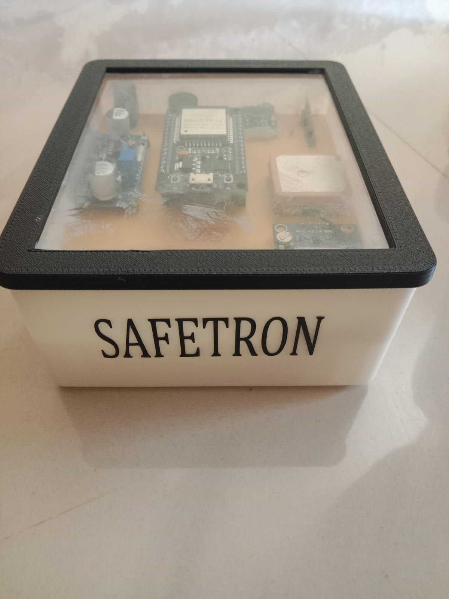
The SAFETRON AI Gig Rider Safety Platform is an IoT-based project developed to support the safety of gig workers and delivery riders. It uses an ESP32, a magnetometer, and a GPS module to monitor sensor readings and obtain location information. When a possible incident is detected, the system activates a buzzer and LED and sends alerts through Telegram. The Adafruit IO dashboard helps monitor rider status and location remotely. The project combines embedded systems, GPS, and IoT technologies to provide a cost-effective safety-monitoring prototype. Further testing and improvements are required to make the incident-detection system more reliable.